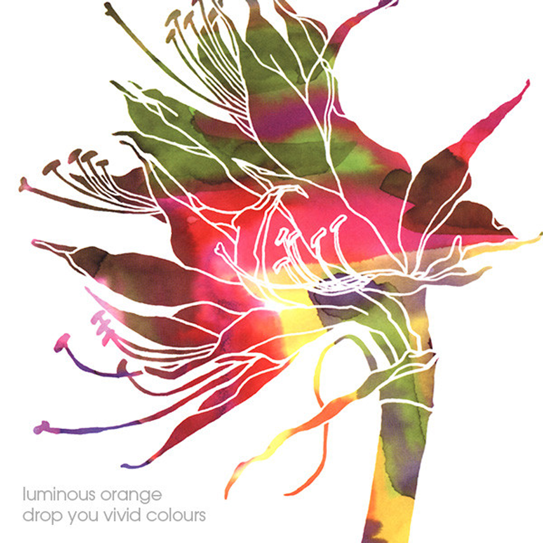

Drop You Vivid Colours
Luminous Orange
2002 • 10 songs • 47:29
Genres: Shoegaze
Neo-Psychedelia, Noise Pop
Other than the tremolo-strummed guitar that pops up every here and there, Luminous Orange is quite different from My Bloody Valentine because it's more straightforward with dreamy guitars and a dry-sounding mix.
This album is happy, noisy, summery and lush.
Less dense, more alternative